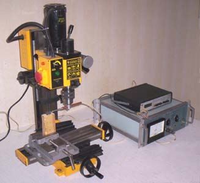
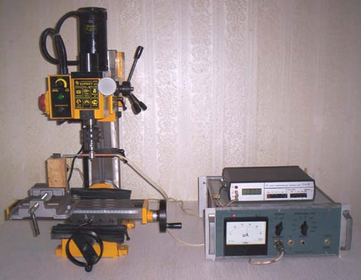
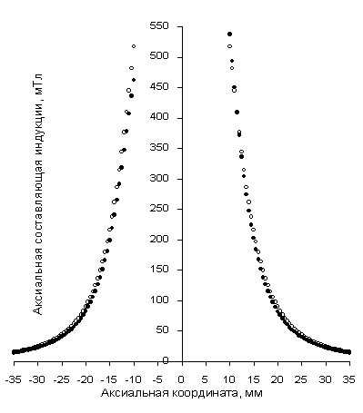

Сканирование магнитных полей (магнитное сканирование)

Введение
Качественная оценка пространственного распределения постоянных и медленно изменяющихся магнитных полей может быть сделана методами супервидения - с применением магнитных пленок или железных опилок [2]. Полученные таким образом предварительные сведения о распределении силовых линий магнитного поля позволяют построить более рациональную методику дальнейших точных измерений его топографии. Чтобы получить пространственную зависимость компонент вектора магнитной индукции, необходимо использовать приборы для измерения магнитных полей [4] в совокупности с устройствами перемещения по координатам. При измерении координатных составляющих магнитной индукции в заданном объеме следует правильно выбрать траекторию движения измерительного щупа с первичным преобразователем индукции относительно пространственных координат. В одних случаях, например, если магнитное поле имеет осевую симметрию, составляющие индукции могут быть измерены в цилиндрических координатах [3, 5]. В других случаях может потребоваться измерение составляющих вектора магнитной индукции в прямоугольных координатах.
Установка сканирования магнитных полей на основе фрезерного станка
Установка сканирования магнитных полей (рис. 1) может быть быстро собрана на основе фрезерного станка, имеющего двухкоординатный стол (разрешение 0.02 мм по каждой координате) и устройство для точного перемещения шпиндельной бабки по высоте (разрешение 0.025 мм). Измерение магнитной индукции производится с помощью тесламетра [4]. Тесламетр имеет выходной разъем, к которому может быть подключен внешний вольтметр или осциллограф. Установка позволяет проводить сканирование по трем прямоугольным координатам. Используя специально предназначенный для фрезерного станка поворотный стол, можно проводить сканирование в цилиндрической системе координат. Установка позволяет сканировать как постоянные, так и переменные магнитные поля. Снятие показаний производится вручную. Установка обладает большой степенью гибкости, позволяя строить различные измерительные конфигурации, в том числе, с использованием принудительного вращения образца.

Рис. 1. Установка для сканирования индукции магнитного поля по трем прямоугольным координатам.
Фрезерный станок состоит из массивных ферромагнитных деталей суммарной массой примерно 50 кг, создающих, во-первых, собственное магнитное поле (как за счет собственной остаточной намагниченности, так и благодаря взаимодействию с полем Земли) и, во-вторых, искажающих измеряемое магнитное поле. Этот фактор накладывает ограничения на величину индукции измеряемого магнитного поля, и его необходимо учитывать при проведении измерений. Сканируемый образец необходимо размещать в зоне, где собственное магнитное поле деталей станка не будет оказывать существенного влияния на результаты измерений. Вряд ли возможно подобным методом сканировать магнитные поля, сопоставимые с магнитным полем Земли (~50 мкТл), скорее он подходит для построения топографии полей, магнитная индукция которых превосходит 0.5 мТл.
В качестве примера использования установки на рис. 2 приведены результаты расчета и сканирования аксиальной составляющей магнитной индукции по оси постоянного цилиндрического магнита. Размеры магнита: диаметр 14.5 мм, высота 20 мм. Состав: неодим-железо-бор, остаточная индукция ~1.1 Тл. Центр координат (0, 0) совпадает с центром магнита. Расчетные значения получены с помощью программы A_Magnet [1].

Рис. 2. Зависимость аксиальной составляющей магнитной индукции от аксиальной координаты: светлые кружки - расчетные значения, темные кружки - измеренные значения.
Некоторое расхождение измеренных и расчетных значений объясняется неоднородностью плотности постоянного магнита, возникающей вследствие особенностей технологии изготовления.
Ссылки:
17.02.2008
Альтернативные источники
энергии
Компьютеры и
Интернет
Магнитные поля
Механотронные системы
Перспективные
разработки
Электроника и
технология